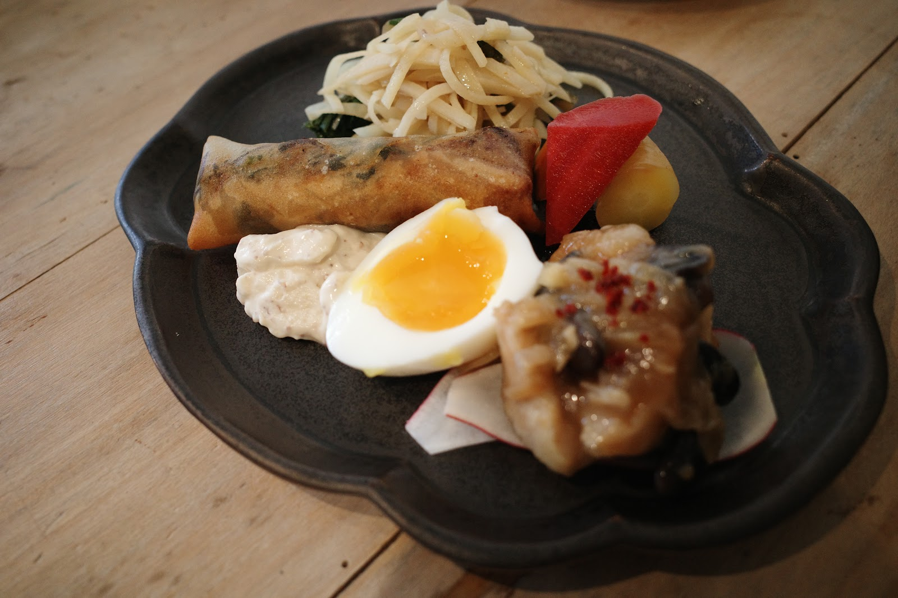
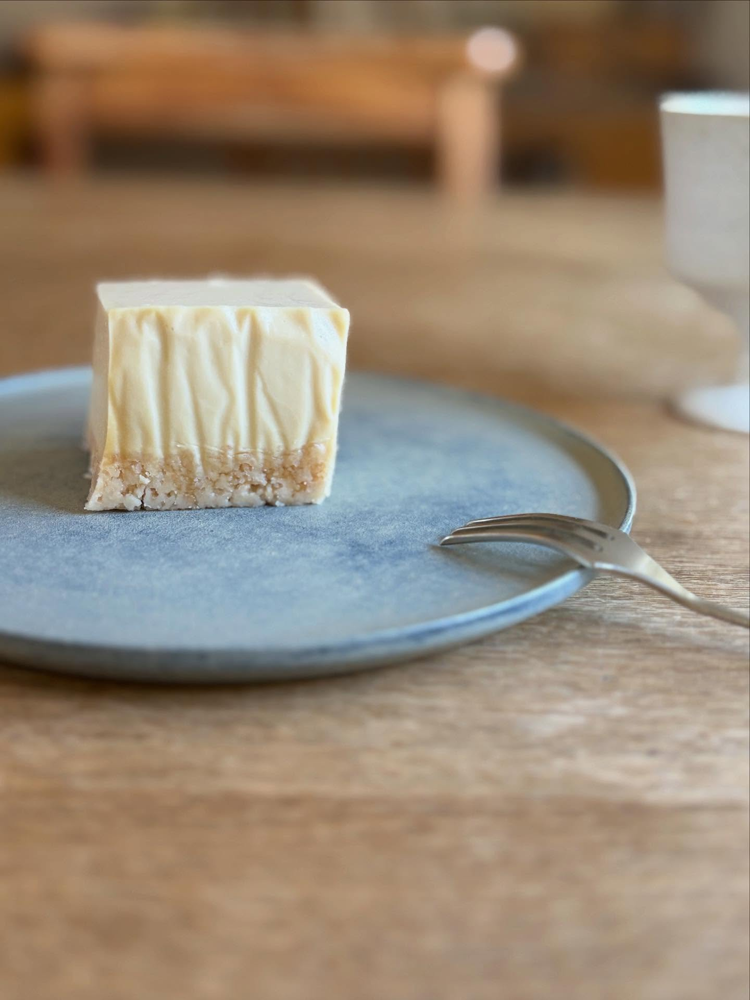
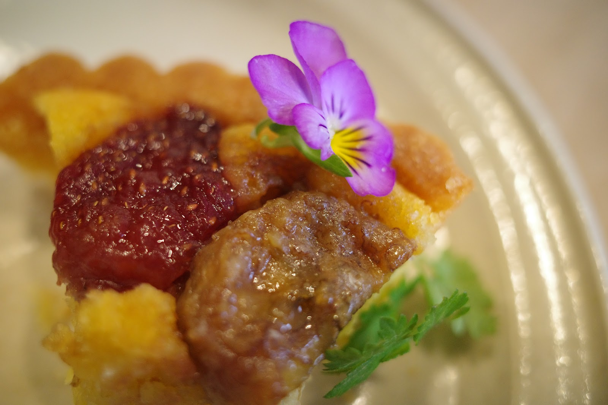
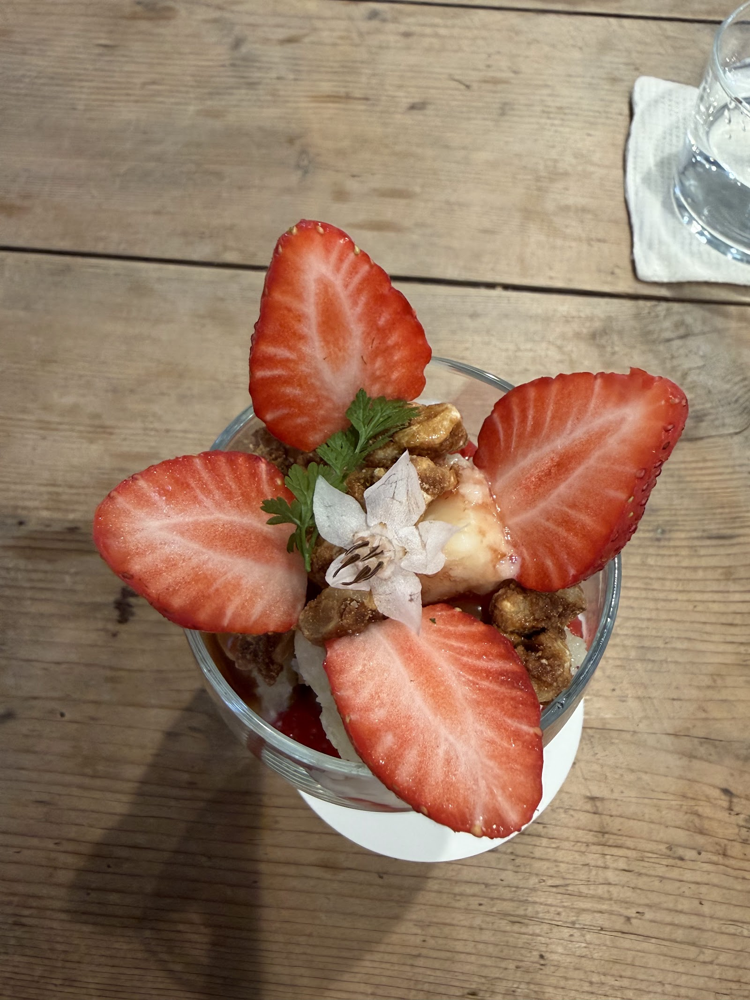

Instagramを見る
撮影: cafe mado
体にやさしい食材を活かした料理と、季節ごとに表情を変えるスイーツ、ゆったりとした時間を演出するドリンクをご用意しています。

撮影: めーさん
彩り豊かな一皿に、素材の持ち味を活かした優しい味わいを込めています。


手をかけて仕上げるスイーツは、目にも楽しいひとときを添えます。
お食事にもひと息にも寄り添う、ゆったりとした時間のためのドリンクです。

撮影: 映梨
季節ごとに表情を変えるパフェで、旬のうつろいをお楽しみいただけます。
メニュー内容は季節や仕入れにより変わります。最新情報はInstagram(@mado_sakanoue)にてご確認ください。
気になるメニューは、ぜひ店内で。